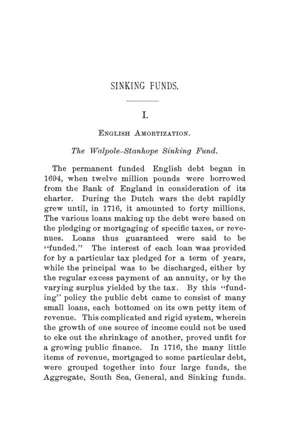

Ross, 1892: o fundo que prometia pagar a dívida sozinho
Leitura: 11 min
Em 1892, Edward A. Ross mostrou como a Inglaterra pagou caro por um fundo que amortizava dívida com dinheiro emprestado, e por que só o superávit paga a conta.


Em 1828, uma comissão do Parlamento britânico fez uma conta incômoda. Entre 1785 e 1829, para manter o fundo de amortização funcionando durante as guerras, o país tomara emprestados £ 330 milhões a cerca de 5% ao ano. O dinheiro serviu para pagar uma dívida do mesmo tamanho que custava 4,5%. A Inglaterra trocou dívida barata por dívida cara e, por décadas, chamou a operação de prudência.
A conta está no centro da parte inglesa de Sinking Funds, monografia de Edward A. Ross, professor associado de economia política e finanças da Universidade Cornell, publicada em julho e setembro de 1892 num número duplo das Publications of the American Economic Association. São cerca de cem páginas em três partes: a amortização inglesa, a americana e uma teoria geral. A Inglaterra, diz Ross na introdução, exemplifica todos os erros que uma teoria equivocada pode produzir; os Estados Unidos mostram a lenta emergência das formas que a experiência e a análise aprovaram.
O que é, afinal, um fundo de amortização?
Amortizar é pagar o principal da dívida, não apenas os juros. O fundo de amortização (sinking fund) inglês nasceu em 1716, quando as pequenas receitas vinculadas a cada empréstimo foram reunidas em quatro grandes fundos. Três pagavam juros. O quarto juntava as sobras dos outros e se destinava a “afundar” a dívida nacional, e a nenhum outro fim. Como cada resgate liberava juros que voltavam ao fundo, ele crescia em progressão geométrica.
A virtude durou pouco. Em 1727, a redução dos juros da dívida de 5% para 4% acrescentou £ 400 mil por ano às sobras do fundo. Daí em diante, os ministros passaram a carregá-lo com os juros de empréstimos novos. Em 1733, Walpole precisou de meio milhão para despesas correntes e o tirou do fundo. Em 1752, o fundo já recebia impostos e encargos de dívida nova; seu caráter original, escreve Ross, ficou inteiramente obscurecido. Ainda assim, servia para embalar o público na crença de que a dívida estava sendo extinta.
Como um centavo podia virar um planeta de ouro?
O erro intelectual veio de um clérigo. Em 1772, o Dr. Price publicou um apelo ao público sobre a dívida nacional, muito lido. A receita: separar uma quantia fixa por ano, comprar títulos públicos no mercado e reinvestir os juros desses títulos. O fundo cresceria a juros compostos e, se mantido intocado, absorveria qualquer dívida. Valia até tomar empréstimo para manter os aportes, porque o dinheiro emprestado custaria juros simples e renderia juros compostos.
Price ilustrava a mágica com um centavo (penny) aplicado a 5% compostos desde o ano 1: em 1775, valeria 300 milhões de Terras de ouro maciço. A juros simples, apenas sete xelins e seis pence. Ross aponta o equívoco central: tratar o título público como propriedade produtiva. Os “rendimentos” do fundo eram, na verdade, impostos pagos como juros sobre dívida que o próprio Estado já havia recomprado.
Pitt assumiu em 1784 com a dívida em £ 245 milhões e adotou a teoria. Em 1786, transformou um superávit de £ 900 mil, elevado a £ 1 milhão com novos impostos, em dotação permanente, entregue a uma comissão especial que comprava títulos a cada trimestre. O plano começou honesto, apoiado num superávit real. O erro foi não suspendê-lo quando a guerra com a França começou, em 1793. Sob a influência de Price, o Parlamento seguiu reforçando o fundo enquanto o orçamento só mostrava déficits, até aplicar £ 16 milhões no resgate de dívida antiga em 1813.
No mesmo ano de 1813, o professor Hamilton, de Aberdeen, desmontou Price ponto por ponto. O único fundo de amortização real é o excesso da receita sobre a despesa; amortizar enquanto se toma emprestado não reduz a dívida, aumenta-a. Lord Grenville, antigo defensor de Pitt, retratou-se em 1828. No ano seguinte, a Inglaterra aboliu o fundo formal e passou a destinar à dívida apenas o superávit que de fato aparecesse.
O que os Estados Unidos copiaram da Inglaterra?
Hamilton, primeiro secretário do Tesouro americano, importou o aparato de Pitt. Seu relatório sobre o crédito público, de 14 de janeiro de 1790, orientou a lei de financiamento da dívida de agosto daquele ano, e em seus relatórios aparece a máxima que ele queria ver incorporada ao sistema:
“A criação de dívida deve sempre vir acompanhada dos meios de extingui-la” (“the creation of debt should always be accompanied with the means of extinguishment”)
As primeiras compras deram certo, porque havia sobra de receita. Os comissários começaram comprando títulos a 54 centavos por dólar, e a média logo subiu para 62, o que ajudou a recuperar o valor da dívida. Mas a rigidez cobrou seu preço. Em 1799, o governo só conseguiu captar a 8%, e no mesmo ano os comissários gastaram US$ 638 mil resgatando títulos de 6%. Pela conta de Ross, essa única amortização custou US$ 12.760 por ano enquanto durassem os papéis de 8%.
Gallatin, que assumiria o Tesouro em 1801, explicou o problema no debate de janeiro de 1800 com uma clareza que Ross registra como antecipação do que os ingleses só admitiriam em 1813:
“Só conheço uma maneira de uma nação pagar suas dívidas” (“I know but one way that a nation has of paying her debts”)
A maneira é a do indivíduo: gastar menos do que recebe. O exemplo numérico de Gallatin continua didático. Com receita de 9 milhões e despesa de 14, o governo precisa tomar 5. Se 2 milhões da receita estiverem presos ao fundo, terá de tomar 7 para pagar 2 de dívida velha. A dívida cresce os mesmos 5 milhões. Só muda a diferença entre o juro da dívida nova e o preço da velha.
O fundo funcionou quando houve superávit?
Como secretário do Tesouro a partir de 1801, Gallatin manteve os comissários, por cálculo político, mas simplificou o resto. A lei de 29 de abril de 1802 reservou US$ 7,3 milhões por ano para todo o serviço da dívida, juros e principal juntos, com prioridade sobre as despesas correntes. Com receita estimada em US$ 9,95 milhões e despesa de US$ 2,65 milhões, o governo passaria a viver das sobras do fundo, e não o contrário.
A guerra de 1812 inverteu o ciclo. O fundo de 8 milhões passou a responder por notas do Tesouro e empréstimos de curto prazo e, no fim de 1815, carregava US$ 108,7 milhões. A reorganização veio com a lei de 3 de março de 1817, que revogou toda a legislação anterior: US$ 10 milhões anuais, mais as sobras acima de 2 milhões, e destruição dos títulos resgatados, sem juros fictícios sobre eles. Para Ross, é o momento em que a simplicidade e o bom senso triunfam. Até o fim de 1834, a dívida estava praticamente extinta.
A promessa de 1862 foi cumprida?
A Guerra Civil trouxe de volta os princípios de Hamilton. A lei de 25 de fevereiro de 1862 mandou aplicar, a cada ano fiscal, 1% de toda a dívida, mais os juros dos títulos já comprados, e fez disso parte de uma lei de empréstimo, isto é, um compromisso com os credores. Durante a guerra, a regra não foi cumprida. Depois, o Tesouro pagou o que podia, sem olhar para ela.
O total impressiona; o ano a ano, nem tanto. Para 1874-75, havia um superávit de 9 milhões contra mais de 31 milhões exigidos pela lei. O senador Sherman admitiu que, a partir de 1873, o governo não pagou nem um quarto ou um quinto do fundo. Num debate de 1884, o senador Plumb descreveu o fundo como mera contabilidade:
“lançamentos nos livros do Tesouro, mas nada nos cofres” (“entries on the books of the treasury, but nothing in the vaults”)
A conclusão de Ross é seca. Administrada assim, a lei equivalia a mandar o secretário usar o superávit para pagar dívida, como teria feito sem lei nenhuma. Pior: as verbas de rios e portos, concessões gratuitas, tinham preferência no caixa sobre um compromisso contratual.
Qual é o melhor modo de amortizar?
A parte teórica parte de um argumento de função. Uma fundição estatal de canhões financiada com dívida continua fazendo canhões. Um fundo de amortização financiado com dívida não faz nada: quando a dívida criada iguala a paga, o resultado líquido é zero. Daí a regra de Ross: suspender a amortização sempre que os déficits obrigarem a tomar empréstimos, com duas exceções, a amortização que funciona como refinanciamento parcial e o caso em que abandonar uma política estabelecida custaria mais em confiança do que mantê-la.
O extremo oposto também falha. Destinar à dívida apenas o superávit eventual, como fez a Inglaterra depois de 1829, entregou a decisão aos ministros e às pressões por corte de impostos. A meta era de £ 3 milhões por ano; entre 1829 e 1869, o superávit aplicado à dívida britânica ficou em média em £ 760 mil. Ross prefere, por isso, uma dotação regular dentro do orçamento, que só pode ser suspensa por ato explícito do Legislativo.
Entre as formas regulares, a progressiva mantém constante o encargo total da dívida: a cada ano, os juros liberados pelos resgates anteriores somam-se à parcela fixa. Assim, o peso não se concentra nos primeiros anos. As anuidades termináveis são a forma mais rígida, porque deixar de pagar o principal equivale a dar calote. O veredito final é técnico e um tanto patriótico: o fundo combinado de Gallatin, uma soma fixa maior que os juros dividida entre juros e principal, é o modo mais simples, claro e eficaz de reduzir dívidas públicas já empregado. Receitas vinculadas, só para empréstimos produtivos, como ferrovias e telégrafos, que devem pagar a si mesmos.
Na minha leitura
Na minha leitura, a lição mais durável de Ross não está na tipologia, mas na distinção entre o mecanismo e o resultado. Ainda hoje se discutem regras fiscais como se a engenharia da regra pudesse substituir a condição que Gallatin considerava indispensável: receita maior que despesa. Fundos, vinculações e metas ajudam a disciplinar o orçamento, mas não criam superávit. Quando a regra é cumprida com dinheiro emprestado, a contabilidade melhora e a dívida não.
O segundo ponto é a credibilidade. O fundo inglês e a lei americana de 1862 mostram dois fracassos opostos: a regra cumprida a qualquer custo e a regra reinterpretada até virar letra morta. Ross não escolhe a rigidez nem o arbítrio. Escolhe a simplicidade, com contas que qualquer um pode acompanhar e suspensão só por decisão pública e explícita. Parece pouco. É o que muitos sistemas fiscais ainda têm dificuldade de garantir.
Glossário
- Amortização
- pagamento do principal de uma dívida, distinto do pagamento dos juros.
- Fundo de amortização (sinking fund)
- receita ou dotação reservada regularmente para resgatar o principal da dívida pública.
- Juros fictícios
- juros que o Tesouro pagava a uma comissão sobre títulos que o próprio Estado já tinha recomprado.
- Consols
- títulos da dívida britânica consolidada, originados quando Pitt fundiu as receitas dos quatro fundos permanentes num só.
- Fundo combinado
- soma anual fixa, maior que os juros, dividida entre juros e principal; a parte do principal cresce a cada ano.
- Amortização progressiva
- regime em que os juros liberados pelos resgates se somam à parcela fixa, mantendo constante o encargo total da dívida.
- Anuidade terminável
- título que paga, num prazo fixo, juros e principal juntos; deixar de pagá-lo equivale a calote.
- Dívida flutuante
- dívida de curto prazo, como notas do Tesouro, que deve ser paga ou convertida em dívida de longo prazo.
Fontes
- [Sinking Funds]: Introduction (pp. 7). JSTOR · Internet Archive (PDF)
- Sinking Funds (pp. 9–106). JSTOR · Internet Archive (PDF)
- Sumário da edição no JSTOR: Publications of the American Economic Association, vol. 7, nº 4/5.
Documento em domínio público (EUA, publicado antes de 1931), via JSTOR Early Journal Content e Internet Archive. Resumo e comentário do autor deste site, sem afiliação com a American Economic Association. Encontrou um erro? Escreva: a correção é publicada no próprio texto, com data.
← Nº 33 · Seligman, 1892: quem realmente paga o imposto? Nº 35 · Haynes, 1892: o acordo com o Canadá que a política derrubou →